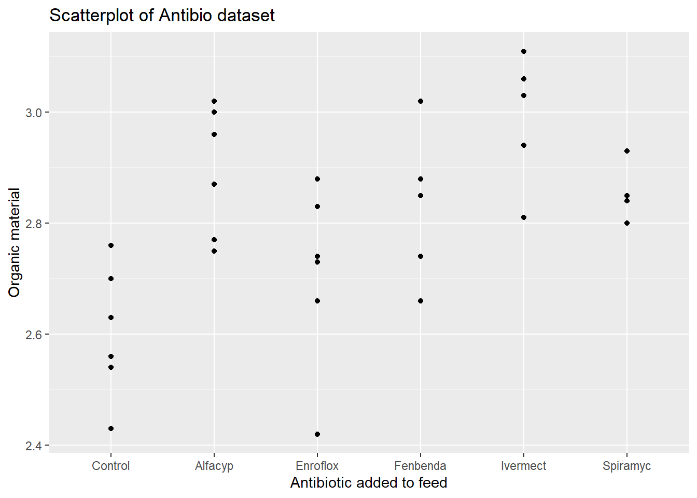

Chapter 4 One-way analysis of variance
4.1 When to use this model?
One way analysis of variance (one-way ANOVA) may be used to compare the mean in two or more populations based on a sample from each population.
Less formally: when you measure a numerical/quantitative outcome and your observations are sampled from different groups!
::: {.example #y1, antibio name=“Antibiotics and dung decomposition”} Bags of dung collected from 34 heifers that were fed with a standard feed possibly with different types of antibiotics added. The bags were dug into the soil for eight weeks, and the amount of organic material was measured for each bag. :::

The purpose of one-way analysis of variance is to use the dataset to estimate and compare the average amount of organic material between groups as it would have looked if we had an infinitely large sample from each group. For a full description of the dataset see … .
::: {.example #y2, dogs name=“Left atrial volume in dogs”} The maximal volume of the left atrial in mL was measured in 97 dogs of five different breeds. A subset of the dataset is displayed below :::
## # A tibble: 10 × 2
## race maxLA
## <chr> <dbl>
## 1 Grand_Danois 30.3
## 2 Whippet 8.39
## 3 Labrador 19.7
## 4 Petit_Basset 9.47
## 5 Petit_Basset 11.3
## 6 Labrador 18.0
## 7 Petit_Basset 11.8
## 8 Whippet 9.42
## 9 Grand_Danois 55.6
## 10 Border_Terrier 2.78One-way ANOVA may be used to decide if this small dataset supports general statements of the form: the mean value of the maximal volume of the left atrial differs between breeds (or more specifically between breeds A and B). This is part of a larger dataset presented in the paper … .
4.2 Organisation of data and data import
There are basically two popular ways to organise data for a one-way ANOVA: wide format and long format.
In wide format measurements from separate groups are stored in separate columns …
A screenshot of the dataset from Example ?? stored as an Excel file in wide format
Note that for data to be used in a one-way ANOVA there is no link between observations from different columns stored in the same row. If you believe that there is a connection/dependence between observations in the same row, then one-way ANOVA may not be the appropriate statistical analysis method. A common example of this is when data in the same row represent measurements on the same individual under different conditions or at different time points. Look here for more relevant models.
In long format each observation / measurement is stored in the same column and information in some other column is used to identify observations from the same group …

A screenshot of the dataset from Example ?? stored as an Excel file in long format
Whether data should be stored in wide or long format may depend on the software used to carry out the one-way ANOVA. In R it is recommended to use the long format. Below we show how to read in data stored in both formats, and how to use R to transform data from wide to long format.
library(readxl)
antibio_wide <- read_excel("data/1_1_B_antibio_wideformat.xlsx")
head(antibio_wide)## # A tibble: 6 × 6
## Alfacyp Control Enroflox Fenbenda Ivermect Spiramyc
## <dbl> <dbl> <dbl> <dbl> <dbl> <dbl>
## 1 3 2.43 2.74 2.74 3.03 2.8
## 2 3.02 2.63 2.88 2.88 2.81 2.85
## 3 2.87 2.56 2.42 2.85 3.06 2.84
## 4 2.96 2.76 2.73 3.02 3.11 2.93
## 5 2.77 2.7 2.83 2.85 2.94 NA
## 6 2.75 2.54 2.66 2.66 3.06 NAWe want all the different treatment groups together in one column which we call type. This is because we want the reponse, org, to be in one column as well, so we have one observation per row (instead of the 6 observations per row). To fix this we will be using the function pivot_longer() in the tidyverse package:
library(tidyverse)
antibio_long <- pivot_longer(antibio_wide, cols = 1:6, names_to = "type", values_to = "org")
head(antibio_long)## # A tibble: 6 × 2
## type org
## <chr> <dbl>
## 1 Alfacyp 3
## 2 Control 2.43
## 3 Enroflox 2.74
## 4 Fenbenda 2.74
## 5 Ivermect 3.03
## 6 Spiramyc 2.8Now the data is in the long format. However. if we look at a summary of the data
summary(antibio_long)## type org
## Length:36 Min. :2.420
## Class :character 1st Qu.:2.732
## Mode :character Median :2.835
## Mean :2.814
## 3rd Qu.:2.938
## Max. :3.110
## NA's :2we can see that doing the pivot_longer() command has produced two NAs. This is because there are two fewer observations of the antibiotic Spiramyc, which then have been set to NA. These two NA observations can in this case be removed
library(tidyr)
antibio_long <- drop_na(antibio_long)4.3 Data exploration
Below we use the antibio dataset which is available in the R package isdals (so no need to run the code above to get data into R):
library(isdals)
data(antibio)
head(antibio)## type org
## 1 Ivermect 3.03
## 2 Ivermect 2.81
## 3 Ivermect 3.06
## 4 Ivermect 3.11
## 5 Ivermect 2.94
## 6 Ivermect 3.06Data may be visualised by a boxplot
boxplot(org ~ type, data = antibio, xlab = "Antibiotic added to feed", ylab = "Organic material")or by a scatterplot
library(ggplot2)
ggplot(data = antibio) + geom_point(aes(x = type, y = org)) + labs(x = "Antibiotic added to feed", y = "Organic material")It is convenient to compute summarizes of the outcome divided by group
antibio_tab <- summarise(group_by(antibio, type), n = n(), mean_org = mean(org), sd_org = sd(org), median_org = median(org))
antibio_tab## # A tibble: 6 × 5
## type n mean_org sd_org median_org
## <fct> <int> <dbl> <dbl> <dbl>
## 1 Alfacyp 6 2.90 0.117 2.92
## 2 Control 6 2.60 0.119 2.60
## 3 Enroflox 6 2.71 0.162 2.74
## 4 Fenbenda 6 2.83 0.124 2.85
## 5 Ivermect 6 3.00 0.109 3.04
## 6 Spiramyc 4 2.86 0.0545 2.84The dataset with grouped summaries may be used to display the mean in each group with added error bars indicating the size of the standard deviation.
# Default bar plot
p <- ggplot(antibio_tab, aes(x = type, y = mean_org, fill = type)) +
geom_bar(stat="identity",
position=position_dodge(), width = .65) +
geom_errorbar(aes(ymin = mean_org - sd_org, ymax = mean_org + sd_org), width=.2,
position=position_dodge(.9))
# Finished bar plot
p + labs(title="Barplot of sample means with error bars (+/- SD)", x="Antibiotic added to feed", y = "Organic material", fill = "Antibiotic")4.4 Fitting the model
The one-way ANOVA model is fitted in R using the lm() function. The lm() function returns an object of class lm containing many components that may be of interest to the user. Different useful functions to extract various components from an lm object are described in the following sections.
Basically, the lm object obtained by fitting a one-way ANOVA model contains all information required to describe the estimated mean for each group and the variability of the estimates due to the fact that we only have a fairly small sample (from an infinitely large target population).
An important point is that the way the estimated group means are stored depends on the formula used to fit the model. It might be useful for you to skip the following and go directly to section about emmeans
4.4.1 … with default reference group
The one-way ANOVA model for Example ?? may be fitted using
m1 <- lm(org ~ type, data = antibio)
summary(m1)##
## Call:
## lm(formula = org ~ type, data = antibio)
##
## Residuals:
## Min 1Q Median 3Q Max
## -0.29000 -0.06000 0.01833 0.07250 0.18667
##
## Coefficients:
## Estimate Std. Error t value Pr(>|t|)
## (Intercept) 2.89500 0.04970 58.248 < 2e-16 ***
## typeControl -0.29167 0.07029 -4.150 0.000281 ***
## typeEnroflox -0.18500 0.07029 -2.632 0.013653 *
## typeFenbenda -0.06167 0.07029 -0.877 0.387770
## typeIvermect 0.10667 0.07029 1.518 0.140338
## typeSpiramyc -0.04000 0.07858 -0.509 0.614738
## ---
## Signif. codes: 0 '***' 0.001 '**' 0.01 '*' 0.05 '.' 0.1 ' ' 1
##
## Residual standard error: 0.1217 on 28 degrees of freedom
## Multiple R-squared: 0.5874, Adjusted R-squared: 0.5137
## F-statistic: 7.973 on 5 and 28 DF, p-value: 8.953e-05But note that here the estimates of the model are stored as
- the estimate for the mean of the outcome in a reference group
- the estimate of the difference between the mean of any other group and the reference group
The reference group is chosen as the first in alpahbetic order of the labels of the group (here given by the variable type). For this dataset the reference group is type = Alphacyp. The output from the summary() function tells us that the estimated mean amount of organic matter is 2.895 for the reference group (Alphacyp), and that e.g. the estimated difference between mean in the group type = Ivermect and the reference group is 0.107. E.g. the estimated mean for type = Ivermect is 2.895+0.107 = 3.002.
4.4.2 .. without a reference group
To fit a linear model without a reference group, one can add -1 to the formula to remove the Intercept:
m2 <- lm(org ~ type - 1, data = antibio)
summary(m2)##
## Call:
## lm(formula = org ~ type - 1, data = antibio)
##
## Residuals:
## Min 1Q Median 3Q Max
## -0.29000 -0.06000 0.01833 0.07250 0.18667
##
## Coefficients:
## Estimate Std. Error t value Pr(>|t|)
## typeAlfacyp 2.89500 0.04970 58.25 <2e-16 ***
## typeControl 2.60333 0.04970 52.38 <2e-16 ***
## typeEnroflox 2.71000 0.04970 54.53 <2e-16 ***
## typeFenbenda 2.83333 0.04970 57.01 <2e-16 ***
## typeIvermect 3.00167 0.04970 60.39 <2e-16 ***
## typeSpiramyc 2.85500 0.06087 46.90 <2e-16 ***
## ---
## Signif. codes: 0 '***' 0.001 '**' 0.01 '*' 0.05 '.' 0.1 ' ' 1
##
## Residual standard error: 0.1217 on 28 degrees of freedom
## Multiple R-squared: 0.9985, Adjusted R-squared: 0.9981
## F-statistic: 3034 on 6 and 28 DF, p-value: < 2.2e-16Here the lm object stores estimates for the mean amount of organic matter for any specific type, e.g. for type = Enroflox the corresponding estimate is 2.71.
The Std. Error is the standard error of the estimates. When the estimates are obtained just a the sample average of observations in a group, the Std. Error is computed as the estimated with-in group standard deviation (in output: Residual standard error) divided by the square root of the number of observations in the group.
4.4.3 … with user defined reference group
To change the reference group we can use relevel() when fitting the model. Here it is important to note that relevel() can only be used on variables of type factor:
m3 <- lm(org ~ relevel(factor(type), ref = "Control"), data = antibio)
summary(m3)##
## Call:
## lm(formula = org ~ relevel(factor(type), ref = "Control"), data = antibio)
##
## Residuals:
## Min 1Q Median 3Q Max
## -0.29000 -0.06000 0.01833 0.07250 0.18667
##
## Coefficients:
## Estimate Std. Error t value Pr(>|t|)
## (Intercept) 2.60333 0.04970 52.379 < 2e-16 ***
## relevel(factor(type), ref = "Control")Alfacyp 0.29167 0.07029 4.150 0.000281 ***
## relevel(factor(type), ref = "Control")Enroflox 0.10667 0.07029 1.518 0.140338
## relevel(factor(type), ref = "Control")Fenbenda 0.23000 0.07029 3.272 0.002834 **
## relevel(factor(type), ref = "Control")Ivermect 0.39833 0.07029 5.667 4.5e-06 ***
## relevel(factor(type), ref = "Control")Spiramyc 0.25167 0.07858 3.202 0.003384 **
## ---
## Signif. codes: 0 '***' 0.001 '**' 0.01 '*' 0.05 '.' 0.1 ' ' 1
##
## Residual standard error: 0.1217 on 28 degrees of freedom
## Multiple R-squared: 0.5874, Adjusted R-squared: 0.5137
## F-statistic: 7.973 on 5 and 28 DF, p-value: 8.953e-05Now the reference group is type = Control. This means that the estimate for the Intercept 2.603 is the estimated mean amount of organic matter for the Control group. The predicted values for the other types can be calculated the same way as above.
4.4.4 Digging more into the output from summary()
Let us fit the one-way ANOVA model with Control as reference group. If it is indisputable which group should be the reference group I may be convenient to change this as indicated here:
antibio$type <- relevel(factor(antibio$type), ref = "Control")
m4 <- lm(org ~ type, data = antibio)
summary(m4)##
## Call:
## lm(formula = org ~ type, data = antibio)
##
## Residuals:
## Min 1Q Median 3Q Max
## -0.29000 -0.06000 0.01833 0.07250 0.18667
##
## Coefficients:
## Estimate Std. Error t value Pr(>|t|)
## (Intercept) 2.60333 0.04970 52.379 < 2e-16 ***
## typeAlfacyp 0.29167 0.07029 4.150 0.000281 ***
## typeEnroflox 0.10667 0.07029 1.518 0.140338
## typeFenbenda 0.23000 0.07029 3.272 0.002834 **
## typeIvermect 0.39833 0.07029 5.667 4.5e-06 ***
## typeSpiramyc 0.25167 0.07858 3.202 0.003384 **
## ---
## Signif. codes: 0 '***' 0.001 '**' 0.01 '*' 0.05 '.' 0.1 ' ' 1
##
## Residual standard error: 0.1217 on 28 degrees of freedom
## Multiple R-squared: 0.5874, Adjusted R-squared: 0.5137
## F-statistic: 7.973 on 5 and 28 DF, p-value: 8.953e-05When you look at a summary() of an lm object proceed as follows:
- Make sure that you understand what the content in each row of the
Coefficientstable is about. In the output above:(Intercept): everything in this row is about the estimated mean in the reference group (type = Control)typeAlphacyp: everything in this row is about the estimate for the difference between means in theAlphacypgroup and the reference grouptypeEnroflox-typeSpiramyc: same as fortypeAlphacyp
Estimate: contains the estimate for the parameter (could be either the mean in theControlgroup or a difference to theControlgroup)Std. Error: contains the sampling variation of the estimate (that you would expect to observe if you repeated your experiment and computed the estimate over and over again)t value + Pr(>|t|): the t-test statistic and the corresponding P-value for testing that the target parameter (for the corresponding row) equals zero. This is most likely only relevant, if the target parameter of the row is a difference between means.
For this specific example the last five rows of the Coefficients table concerns differences between the mean amount of organic matter when one of the five types of antibiotics is added to the feed, and the mean amount if no antibiotics is added.
As lower P-values are evidence against the null hypothesis (here: no difference compared to Control) we conclude that all antibiotics except Enroflox appears to increase the content of organic matter in bags.
The confint() function constructs confidence intervals for the target parameters based the a model fitted with the lm() function.
confint(m4)## 2.5 % 97.5 %
## (Intercept) 2.50152445 2.7051422
## typeAlfacyp 0.14768716 0.4356462
## typeEnroflox -0.03731284 0.2506462
## typeFenbenda 0.08602049 0.3739795
## typeIvermect 0.25435382 0.5423128
## typeSpiramyc 0.09069268 0.4126407For the model m4 where Control is used a reference when communicating the estimates then we get 95 % confidence intervals for the mean content of organic matter in the Control group, and 95 % confidence intervals for difference between mean amount in any other group and the Control group.
The confidence interval for the difference between the mean amount in the Alphacyp group and the Control group is [0.148, 0.436]. The fact that zero is not contained in this interval is consistent with our finding from the output of summary(m4): the P-value of 0.000281 indicate that there is a significant difference between the mean of the two groups.
4.5 Validating the model
4.5.1 Why do I need to valide the model?
The one-way ANOVA estimates the mean of each population by the average of observations from each group. But it also quantifies the uncertainty of the estimates (due to sampling variation) assuming that
- observations within each group are independent
- observations within each group follows a normal distribution with equal variances
All that we extract from the one-way ANOVA model about uncertainty of estimates (later also tests) is only valid if the model assumptions are valid.
4.5.2 How do I validate the model assumptions?
Something about independence assumption
We must basically just check that observations within each group looks like an (independent) sample from a normal distribution and that the variances (but not necessarily the means) are the same.
Be careful: Do not check that the pooled dataset looks like a sample from a normal distribution!
Show how to extract residuals, using group_by -> summarise to check variation within each group
library(tidyverse)
summarise(group_by(antibio, type), mean_org = mean(org), sd_org = sd(org))## # A tibble: 6 × 3
## type mean_org sd_org
## <fct> <dbl> <dbl>
## 1 Control 2.60 0.119
## 2 Alfacyp 2.90 0.117
## 3 Enroflox 2.71 0.162
## 4 Fenbenda 2.83 0.124
## 5 Ivermect 3.00 0.109
## 6 Spiramyc 2.86 0.0545Here the sd_org should be approximately the same, if we want to use one-way-ANOVA
Show how to make residual plot and qqplot. Make note about difference between residuals and standardized residuals.
Residual plot
antibio_residuals <- resid(m2)
plot(antibio$org, antibio_residuals,
ylab="Residuals",
xlab="org", main="Residual plot of antibio data")
abline(0, 0) When looking at an residual plot, it is important that the residuals are:
- Distributed randomly around the 0,0 line (i.e. there are no patterns).
- Cluster around the middle of the plot
- They are around the lower single digits of the y-axis (i.e the variance of the residuals is small)
In this plot it may be hard to see as it has few observations. It all in all looks random but there are a few concerns at org == 2.4 and org > 3, as there the residual are only at one side of the line.
standardized residuals (often used to identify outliers, where if the standardized residual is greater than +/- 3 it’s probably an outlier)
antibio_standard_res <- rstandard(m2)
plot(antibio$org, antibio_standard_res,
ylab="Standardized residuals",
xlab="org", main="Standardized Residual plot of antibio data")
abline(0, 0)
qq-plot (do this for all types)
types <- unique(antibio$type)
{qqnorm(antibio$org[which(antibio$type==types[6])], pch = 1, frame = FALSE)
qqline(antibio$org[which(antibio$type==types[6])], col = "steelblue", lwd = 2)}4.5.3 What to do if the model is not valid?
Show example where things do not look good. Link to section on alternatives.
library(tidyverse)
summarise(group_by(dogs, race), mean_maxLA = mean(maxLA), sd_maxLA = sd(maxLA))## # A tibble: 5 × 3
## race mean_maxLA sd_maxLA
## <chr> <dbl> <dbl>
## 1 Border_Terrier 5.08 1.29
## 2 Grand_Danois 35.5 8.42
## 3 Labrador 18.9 3.38
## 4 Petit_Basset 12.1 2.68
## 5 Whippet 10.5 2.10Here the standard deviation between the groups varies alot, which means one-way-ANOVA is not the right method to use.
Residual plot for dogs dataset
m4 <- lm(maxLA ~ race, data = dogs)
dogs_residuals <- resid(m4)
plot(dogs$maxLA, dogs_residuals,
ylab="Residuals",
xlab="maxLA", main="Residual plot of dogs data")
abline(0, 0) qq-plot for dogs data (do this for all different races of dogs)
races <- unique(dogs$race)
{qqnorm(dogs$maxLA[which(dogs$race==races[3])], pch = 1, frame = FALSE)
qqline(dogs$maxLA[which(dogs$race==races[3])], col = "steelblue", lwd = 2)}4.6 Extracting estimates with emmeans()
The emmeans R package is useful for extracting estimates for means or differences between means based on a one-way ANOVA model.
library(emmeans)
model1 <- lm(org ~ type, data = antibio)To get estimates and all pairwise comparisons with the control group use
emmeans(model1, specs = trt.vs.ctrlk ~ type, ref = "Control")## $emmeans
## type emmean SE df lower.CL upper.CL
## Control 2.60 0.0497 28 2.50 2.71
## Alfacyp 2.90 0.0497 28 2.79 3.00
## Enroflox 2.71 0.0497 28 2.61 2.81
## Fenbenda 2.83 0.0497 28 2.73 2.94
## Ivermect 3.00 0.0497 28 2.90 3.10
## Spiramyc 2.85 0.0609 28 2.73 2.98
##
## Confidence level used: 0.95
##
## $contrasts
## contrast estimate SE df t.ratio p.value
## Alfacyp - Control 0.292 0.0703 28 4.150 0.0013
## Enroflox - Control 0.107 0.0703 28 1.518 0.4266
## Fenbenda - Control 0.230 0.0703 28 3.272 0.0125
## Ivermect - Control 0.398 0.0703 28 5.667 <.0001
## Spiramyc - Control 0.252 0.0786 28 3.202 0.0149
##
## P value adjustment: dunnettx method for 5 testsInterpretation of output: ….
To get all pairwise comparisons between group mean with P-value adjustment correspoding to the Tukey test use
emm1 <- emmeans(model1, specs = "type")
pairs(emm1)## contrast estimate SE df t.ratio p.value
## Control - Alfacyp -0.2917 0.0703 28 -4.150 0.0035
## Control - Enroflox -0.1067 0.0703 28 -1.518 0.6563
## Control - Fenbenda -0.2300 0.0703 28 -3.272 0.0305
## Control - Ivermect -0.3983 0.0703 28 -5.667 0.0001
## Control - Spiramyc -0.2517 0.0786 28 -3.202 0.0358
## Alfacyp - Enroflox 0.1850 0.0703 28 2.632 0.1226
## Alfacyp - Fenbenda 0.0617 0.0703 28 0.877 0.9488
## Alfacyp - Ivermect -0.1067 0.0703 28 -1.518 0.6563
## Alfacyp - Spiramyc 0.0400 0.0786 28 0.509 0.9954
## Enroflox - Fenbenda -0.1233 0.0703 28 -1.755 0.5094
## Enroflox - Ivermect -0.2917 0.0703 28 -4.150 0.0035
## Enroflox - Spiramyc -0.1450 0.0786 28 -1.845 0.4549
## Fenbenda - Ivermect -0.1683 0.0703 28 -2.395 0.1923
## Fenbenda - Spiramyc -0.0217 0.0786 28 -0.276 0.9998
## Ivermect - Spiramyc 0.1467 0.0786 28 1.866 0.4424
##
## P value adjustment: tukey method for comparing a family of 6 estimatesInterpretation of output: ….
4.7 Reporting the results
Focus on
- how to avoid errors when transferring results from R to you manuscript
- how to make it easy to update results, figures
4.7.1 Tables
How to export a nice table.
- as csv-file
- as csv-file in a format that fits into a table in a manuscript written in word
- as latex output
Here is a function that transforms data in a long format to a nice table. The first argument it needs is the dataframe used. The second is a vector of the variables, which in this example is the variable org. The third argument is the factor variable we were interested in compairing means of, i.e. the different groups used in the One-way-ANOVA (This can either be the different names or the whole column from the data). The number of digits can also be varied by changing the digits argumnet. Switch controls what kind of table the function outputs (this will be shown below).
table_func <- function(df, var, fact_Names,digits=2, Switch=TRUE){
Names <- na.omit(fact_Names)
Names <- as.character(unique(Names))
df2 <- data.frame(matrix(NA, # Create empty data frame
nrow = length(var),
ncol = (length(Names)+1)*3+1))
Names_new <- rep(NA,3*length(Names))
for(i in 1:length(Names)){
Names_new[(i*3+1)-3] <- paste0(Names[i],"_n")
Names_new[(i*3+1)-2] <- paste0(Names[i],"_mean")
Names_new[(i*3+1)-1] <- paste0(Names[i],"_SD")
}
names(df2) <- c("Variables","Total_n","Total_mean","Total_SD",Names_new)
df2$Variables <- var
for(i in 1:length(var)){
df2$Total_n[i] <- sum(!is.na(df[,which(names(df)==var[i] )]))
df2$Total_mean[i] <- round(mean(df[which(!is.na(df[,which(names(df)==var[i] )])),which(names(df)==var[i] )]),digits)
df2$Total_SD[i] <- round(sd(df[which(!is.na(df[,which(names(df)==var[i] )])),which(names(df)==var[i] )]),digits)
for(t in 1:length(Names)){
df2[i,which(names(df2)==Names_new[(t*3+1)-3])] <- sum(!is.na(df[which(fact_Names==Names[t]),which(names(df)==var[i] )]))
df2[i,which(names(df2)==Names_new[(t*3+1)-2])] <- round(mean(df[which(!is.na(df[,which(names(df)==var[i] )]) & fact_Names==Names[t]),which(names(df)==var[i] )]),digits)
df2[i,which(names(df2)==Names_new[(t*3+1)-1])] <- round(sd(df[which(!is.na(df[,which(names(df)==var[i] )]) & fact_Names==Names[t]),which(names(df)==var[i] )]),digits)
}
}
df3 <- data.frame(matrix(NA, # Create empty data frame
nrow = length(var),
ncol = (length(Names)+1)*2+1))
Names_neww <- rep(NA,2*length(Names))
for(i in 1:length(Names)){
Names_neww[(i*2+1)-2] <- paste0(Names[i],"_n")
Names_neww[(i*2+1)-1] <- paste0(Names[i],"_mean(SD)")
}
names(df3) <- c("Variables","Total_n","Total_mean(SD)",Names_neww)
df3$Variables <- var
df3$Total_n <- df2$Total_n
df3$`Total_mean(SD)` <- paste0(round(df2$Total_mean,digits),"(",round(df2$Total_SD,digits),")")
for(i in 1:length(var)){
for(t in 1:length(Names)){
df3[i,which(names(df3)==Names_neww[(t*2+1)-2])] <- df2[i,which(names(df2)==Names_new[(t*3+1)-3])]
df3[i,which(names(df3)==Names_neww[(t*2+1)-1])] <- paste0(round(df2[i,which(names(df2)==Names_new[(t*3+1)-2])],digits),"(",round(df2[i,which(names(df2)==Names_new[(t*3+1)-1])],digits),")")
}
}
if(Switch){
return(df2)
}
else return(df3)
}Now we use the function on the antibio data
table_func(antibio,c("org"), antibio$type,Switch = TRUE)## Variables Total_n Total_mean Total_SD Ivermect_n Ivermect_mean Ivermect_SD Alfacyp_n Alfacyp_mean Alfacyp_SD Enroflox_n Enroflox_mean Enroflox_SD Spiramyc_n Spiramyc_mean Spiramyc_SD Fenbenda_n
## 1 org 34 2.81 0.17 6 3 0.11 6 2.9 0.12 6 2.71 0.16 4 2.86 0.05 6
## Fenbenda_mean Fenbenda_SD Control_n Control_mean Control_SD
## 1 2.83 0.12 6 2.6 0.12If switch is set to FALSE the means and SD columns are merged
table_func(antibio,c("org"), antibio$type,Switch = FALSE)## Variables Total_n Total_mean(SD) Ivermect_n Ivermect_mean(SD) Alfacyp_n Alfacyp_mean(SD) Enroflox_n Enroflox_mean(SD) Spiramyc_n Spiramyc_mean(SD) Fenbenda_n Fenbenda_mean(SD) Control_n
## 1 org 34 2.81(0.17) 6 3(0.11) 6 2.9(0.12) 6 2.71(0.16) 4 2.86(0.05) 6 2.83(0.12) 6
## Control_mean(SD)
## 1 2.6(0.12)4.7.2 Figures
Focus on
- how to polish a figure
- how to save/export a figure
basic plot
library(ggplot2)
ggplot(data = antibio) +
geom_point(aes(x = type, y = org))With custom labels and title
ggplot(data = antibio) +
geom_point(aes(x = type, y = org)) +
labs(title = "Scatterplot of Antibio dataset", x = "Antibiotic added to feed", y = "Organic material")
Adding colours to the dots
ggplot(data = antibio) +
geom_point(aes(x = type, y = org, colour = type)) +
labs(title = "Scatterplot of Antibio dataset", x = "Antibiotic added to feed", y = "Organic material")
Choosing the colours (See http://www.cookbook-r.com/Graphs/Colors_(ggplot2)/ for the colours available, but you can usually just spell the colour you want i.e. “blue” or “red” as done in the example)
ggplot(data = antibio) +
geom_point(aes(x = type, y = org, colour = type)) +
labs(title = "Scatterplot of Antibio dataset", x = "Antibiotic added to feed", y = "Organic material") +
scale_color_manual(values=c("#999999", "#E69F00", "#56B4E9","red","#330000","#00FF33","blue"))To save/export a figure as a pdf, png or jpeg, one can use this method. The code is the same for all three formats expect the dimensions needs to be changed for the chosen format.
# Step 1: Call the pdf command to start the plot
pdf(file = "~/Desktop/test.pdf", # The directory you want to save the file in
width = 10, # The width of the plot in inches
height = 8) # The height of the plot in inches
# png(file = "~/Desktop/test.png",
# width = 800,
# height = 600)
# jpeg(file = "~/Desktop/test.jpeg",
# width = 800,
# height = 600)
# Step 2: Create the plot with R code
ggplot(data = antibio) +
geom_point(aes(x = type, y = org, colour = type)) +
labs(title = "Scatterplot of Antibio dataset", x = "Antibiotic added to feed", y = "Organic material") +
scale_color_manual(values=c("#999999", "#E69F00", "#56B4E9","red","#330000","#00FF33","blue"))
# Step 3: Run dev.off() to create the file!
dev.off()